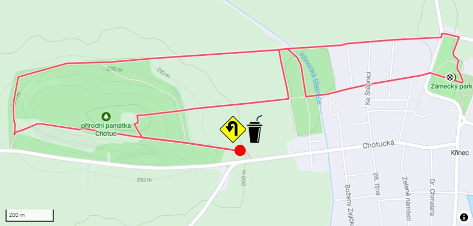

Trať závodu
Trať měří 5,5 kilometrů, 80 % je trail, zbytek asfalt. Hlavní závod běží dva okruhy (celkem 11 km), poloviční závod jeden okruh (5,5 km).
Závod startuje v zámeckém parku, odkud se vybíhá směrem "ke kozám" a pokračuje se nad novostavbami směrem do Bažantnice. Za Bažantnicí se zahne doleva a následně se
"prostředňákem" vybíhá ke hřbitovu. Podél hřbitova se doběhne na hlavní cestu, odkud se sbíhá dolu k silnici, kde je otočka a občerstvovací stanice.
Následně se stejnou cestou vybíhá zpět na Chotuc a pokračuje se podél vodojemu po hřebeni až ke kříži, odkud se seběhne z kopce dolu. Pod Chotucem se odbočí
doprava a celý kopec se oběhne. Po dlouhém rovném úseku se opět přiběhne k Bažantnici, kde se zahne doprava na prostřední cestu a následně doleva směrem k lávce
přes Blatnici a ke škole. Následně se pokračuje přes novostavby stále rovně až zpět do parku.
Mapa trati:
